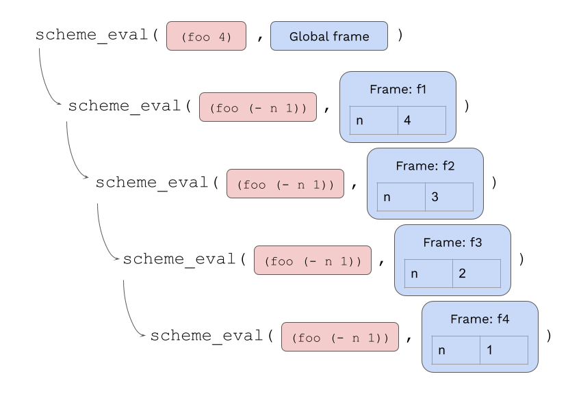
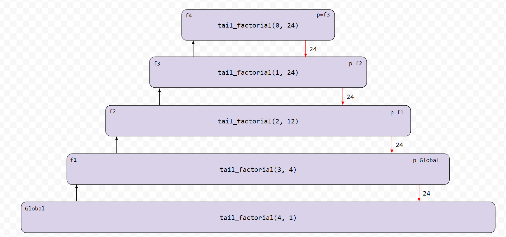

Scheme 解释器
eval 调用 apply，
而 apply 又去调用 eval！
这一切何时才会结束？
引言
重要的提交说明：要拿到满分，在 周四 08/06 前完成阶段 1 和阶段 2 并提交（计 1 分）。
在 周四 08/13 前完成所有阶段并提交。
延期处理：本项目不接受延期（DSP 情况除外）。
请按顺序尝试各个问题并运行它们对应的 ok 测试，因为后面的问题在实现对会依赖于前面的问题。
整个项目可以与一位伙伴组队完成。
若在 周三 08/12 前提交整个项目，可获得 1 个额外学分（EC）点。
在本项目中，你将用 Python 实现一个 Scheme 语言子集的解释器。本项目所用语言子集在《Composing Programs》的函数式编程章节，以及本语言规范和内置过程参考中均有描述。
想进一步了解 Scheme，你可以免费在线阅读《计算机程序的构造和解释》。第 1、2 章中的示例已作为本项目的测试用例包含在内。第 3、4、5 章的语言特性不属于本项目范围，但你当然可以扩展自己的解释器去实现更多语言特性。
下载初始文件
你可以以 zip 压缩包 的形式下载整个项目代码。
你将编辑的文件：
scheme_eval_apply.py：Scheme 表达式的递归求值器scheme_forms.py：用于求值 Scheme 中特殊形式（如define、lambda、and、cond等）的 Python 函数scheme_classes.py：描述 Scheme 表达式的 Python 类questions.scm：需要你实现的 Scheme 过程
项目中其余的文件：
link.py：定义Link类、nil和map_linkscheme.py：解释器的读取-求值-输出循环（REPL，即解释器的用户界面）scheme_builtins.py：Scheme 内置过程scheme_reader.py：Scheme 表达式的读取器（解析器）scheme_tokens.py：Scheme 输入的词法分析器scheme_utils.py：用于检查 Scheme 表达式的函数buffer.py：scheme 读取器使用的一个工具类ucb.py：在 61A 项目中使用的工具函数tests.scm：用 Scheme 编写的测试用例集合ok：自动评分器tests：ok使用的测试目录mytests.rst：一个你可以添加自己测试的文件
项目安排
本项目共 20 分。其中 19 分考察正确性，1 分用于在规定检查点日期前提交阶段 1 和阶段 2。
若在 周三 08/12 前提交整个项目，可获得 1 个额外学分（EC）点。
你需要提交以下文件：
scheme_eval_apply.pyscheme_forms.pyscheme_classes.pyquestions.scm
完成本项目不需要修改或提交任何其他文件。要提交项目，请将所需文件提交到对应的 Gradescope 作业。
你不得使用人工智能工具来协助完成本项目，也不得参考网上找到的题解。
对于我们要求你实现的函数，我们可能提供了一些初始代码。如果你不想使用这些代码，可以随时删掉它并从头开始。你也可以按需添加自己的函数定义。
但是，请不要修改任何其他函数，也不要编辑上述列表之外的文件。否则可能导致你的代码无法通过我们的自动评分测试。另外，请不要更改任何函数的签名（名称、参数顺序或参数个数）。
在整个项目中，你应该持续测试代码的正确性。经常测试是个好习惯，这样便于隔离出问题所在。不过，你也不应测试得过于频繁，要给自己留出思考问题的时间。
我们提供了一个名为 ok 的自动评分器，帮助你测试代码并跟踪进度。第一次运行该评分器时，系统会要求你使用网页浏览器登录你的 Ok 账号。请照做。每次运行 ok，它都会把你的工作和进度备份到我们的服务器上。
ok 的主要用途是测试你的实现。
如果你想交互式地测试你的代码，可以运行
python3 ok -q [question number] -i并填入对应的问题编号（例如
01）。这会一直运行该问题的测试，直到第一个你没通过的测试为止，然后让你有机会交互式地测试你所写的函数。
你也可以通过在 print 语句前加上 "DEBUG:" 来使用 OK 中的调试打印功能。
例如，如果你想检查变量 x 的值，可以这样写：
print(f"DEBUG: x is {x}")
这会在你的终端中输出内容，且不会导致 OK 测试因多出额外输出而失败。
解释器细节
Scheme 的特性
读取-求值-输出。 解释器读取 Scheme 表达式，对它们求值，并显示结果。
scm> 2
2
scm> (+ 2 3)
5
scm> ((lambda (x) (* x x)) 5)
25Scheme 解释器自带的起始代码已经足以成功对上面的第一个表达式（一个数字）求值。然而，更复杂的操作——例如第二个例子（一次对内置过程的调用）和第三个例子（计算 5 的平方）——暂时还无法正常工作。
加载。 你可以通过传入一个表示文件名的符号来加载文件。例如，要加载 tests.scm，可以对下面的调用表达式求值。
scm> (load 'tests)符号。 在 CS 61A 所使用的 Scheme 方言中，符号（或称标识符）是由字母（a-z 和 A-Z）、数字，以及 !$%&*/:<=>?@^_~-+. 中的字符组成的一串序列，且它不构成一个合法的整数或浮点数字面量。
我们使用的 Scheme 版本不区分大小写：如果两个标识符仅在字母的大小写上不同，则被视为相同。它们在内部以全小写形式表示和打印：
scm> 'Hello
hello运行解释器
要启动一个交互式 Scheme 解释器会话，请输入：
python3 scheme.py要退出 Scheme 解释器，在 Mac/Linux 上按 Ctrl-d（或在 Windows 上按 Ctrl-z Enter），也可以在完成问题 3（其中实现了对 Scheme 内置过程的调用）后求值内置的 exit 过程：
scm> (exit)你可以将文件名作为命令行参数传给 scheme.py，从而用你的 Scheme 解释器对输入文件中的表达式求值：
python3 scheme.py tests.scmtests.scm 文件包含一长串示例 Scheme 表达式及其预期值。其中许多示例来自《计算机程序的构造和解释》第 1、2 章，而《Composing Programs》正是改编自这本教材。
Schememon
解释器的一个实际应用，是让用一种编程语言编写的程序能够包含用另一种语言编写的代码。例如，一个用 Python 编写的游戏，只要它内置了一个用 Python 写的 Scheme 解释器（该解释器对 Scheme 表达式求值并将它们的值表示为 Python 对象），就可以包含 Scheme 代码。
本项目就包含这样一款游戏，名为 Schémémon，由往届学生 Tristan Roath 和 Tyler Roath 制作。在这款卡牌对战游戏中，当玩家正确补全一个 Scheme 过程定义时，造成的伤害会翻倍。你在本次项目中构建的 Scheme 解释器正用于判定玩家的答案是否正确。
你可以随时在线游玩 Schememon。为了增添动力，每当你完成本 Scheme 项目中的一个问题时，都可以在 candies 菜单中领取一些橡皮糖来解锁新的对战。详情请阅读说明。
阶段 1：求值器
在你拿到的初始实现中，解释器只能对自求值表达式求值：数字、布尔值以及 nil。
在阶段 1 中，你将开发解释器的以下特性：
- 符号的定义与查找
- 表达式求值
- 调用内置过程（如
+、exit、equal?等；完整列表见内置过程参考）
下面来概览一下初始代码。
在 scheme_eval_apply.py 中：
scheme_eval在环境env中对 Scheme 表达式expr求值。这个函数几乎已经写好了，但缺少了关于调用表达式的逻辑。- 来看
scheme_eval中的这个if语句块：
if scheme_symbolp(first) and first in scheme_forms.SPECIAL_FORMS:
return scheme_forms.SPECIAL_FORMS[first](rest, env)注意，当对特殊形式求值时，scheme_eval 会把求值重定向到 scheme_forms.py 中相应的 do_?_form 函数。特殊形式的一些例子包括 and、or、cond、if（注意它们并非内置过程）。我们将在后续部分实现这些 do_?_form 函数。
scheme_apply将一个过程应用在某些参数上。
在 scheme_classes.py 中：
Frame类表示各个帧，而每个帧同时也表示一个以该帧为起点的环境。LambdaProcedure类表示用户定义的过程。
重要提示： 由于所有非原子的 Scheme 表达式（即调用表达式、特殊形式、定义）都是 Scheme 列表（因而也是链表），我们使用
Link类来表示它们。例如，表达式(+ 1 2)在我们的解释器中会表示为Link('+', Link(1, Link(2, nil)))。更复杂的表达式可以用嵌套的Link表示。例如，表达式(+ 1 (* 2 3))会表示为Link('+', Link(1, Link(Link('*', Link(2, Link(3, nil))), nil)))。
使用 Ok 来检验你的理解：
python3 ok -q eval_apply -u问题 1
在 scheme_classes.py 中实现 Frame 类的 define 和 lookup 方法。
每个 Frame 对象具有以下实例属性：
bindings是一个字典，表示帧对象中的绑定关系。其中每一项将一个 Scheme 符号（以 Python 字符串表示）与一个 Scheme 值关联起来。parent是父Frame实例（即父环境帧）。全局帧的 parent 为None。
要完成这些方法：
define接受一个符号（以 Python 字符串表示）和一个值。它会通过bindings在Frame实例中把该符号绑定到这个值上。lookup接受一个符号，并返回在它所处的环境里、找到它的第一个帧中所绑定的值。一个Frame实例的“环境”由该帧、它的父帧，以及所有祖先帧（包括全局帧）组成。查找符号时：- 如果该符号在当前帧中已有绑定，则返回其值。
- 如果该符号在当前帧中尚未绑定，且当前帧有父帧，则继续在父帧中查找该符号。
- 持续检查所有父帧，直到找到该符号或再没有父帧为止。
- 如果最终在任何帧中都找不到该符号，则抛出 SchemeError。
在编写任何代码之前，请先解锁测试，以验证你对本题的理解：
python3 ok -q 01 -u解锁完成后，便可开始实现你的解法。 你可以用以下命令检查正确性：
python3 ok -q 01完成本问题后，启动你的 Scheme 解释器（运行 python3
scheme.py），现在你应该可以查找内置过程的名称了：
scm> +
#[+]
scm> odd?
#[odd?]不过，在你完成下一个问题之前，你的 Scheme 解释器仍然无法调用这些过程。
记住，目前你只能通过在 Mac/Linux 上按 Ctrl-d（或在 Windows 上按 Ctrl-z Enter）来退出解释器。
问题 2
要能够调用像 + 这样的内置过程，你需要在 scheme_eval_apply.py 的 scheme_apply 函数中补全 BuiltinProcedure 这一分支。内置过程是通过调用一个实现了该过程的相应 Python 函数来应用的。
想查看本项目使用的所有 Scheme 内置过程列表，可以查看
scheme_builtins.py文件。任何被@builtin装饰的函数都会被加入全局定义的BUILTINS列表。
一个 BuiltinProcedure 有两个实例属性：
py_func：实现该内置 Scheme 过程的 Python 函数。need_env：一个布尔值，指示该内置过程是否需要在最后传入当前环境作为参数。例如，要实现内置的eval过程就需要环境。
scheme_apply 接受procedure对象、一个由参数值组成的链表 args，以及当前环境 env。参数 args 是一个 Scheme 列表，表示为 Link 对象或 nil，其中包含传给该procedure的值。例如，如果我们要使用的 Scheme 内置过程是 +，并且把 args 以 Link(1, Link(2, nil)) 的形式传给 scheme_apply，那就相当于进行了调用 (+ 1 2)。
你的实现应当完成以下步骤：
- 将 Scheme 列表转换为 Python 的参数列表。提示：
args是一个Link，具有.first和.rest属性。- 如果
procedure.need_env为True，则把当前环境env添加到这个列表的末尾。- 返回用所有这些参数调用
procedure.py_func的结果。由于你不知道确切的参数个数，请使用*args写法：f(1, 2, 3)等价于f(*[1, 2, 3])。请在提供的try语句中、在try:这一行之后完成这部分。
以下行为我们已经为你实现：
- 如果调用函数时抛出了
TypeError异常，说明传入的参数个数有误。try语句会捕获该异常，并抛出一个带有'incorrect number of arguments'信息的SchemeError。
在编写任何代码之前，请先解锁测试，以验证你对本题的理解：
python3 ok -q 02 -u解锁完成后，便可开始实现你的解法。 你可以用以下命令检查正确性：
python3 ok -q 02👩🏽💻👨🏿💻 结对编程？ 记得在司机（driver）和领航员（navigator）角色之间轮换。 司机控制键盘；领航员负责观察、提问并提出想法。
问题 3
scheme_eval 函数（位于 scheme_eval_apply.py）在某个环境中对一个 Scheme 表达式求值。给出的代码已经能够在当前环境中查找符号、返回自求值表达式（如数字），并对特殊形式求值。
实现 scheme_eval 中缺失的部分，该部分对一个调用表达式求值。要对调用表达式求值：
- 对运算符求值（它应当求值得到一个
Procedure实例——关于Procedure的定义见scheme_classes.py）。 - 对所有操作数求值，并把结果（即参数值）收集到一个 Scheme 列表中。
- 返回用这个
Procedure、这些参数值以及当前环境调用scheme_apply的结果。
在前两步中，你需要递归地调用 scheme_eval。以下是你应当用到的一些其他函数/方法：
map_link函数会对 Scheme 列表中的每一项应用一个单参数 Python 函数，并返回由此构造出的新 Scheme 列表。scheme_apply函数把一个 Scheme 过程应用到以 Scheme 列表（Link实例或nil）表示的参数上。
重要：不要修改传入的
expr。那会在程序求值过程中改变它，产生奇怪且不正确的效果。
在编写任何代码之前，请先解锁测试，以验证你对本题的理解：
python3 ok -q 03 -u解锁完成后，便可开始实现你的解法。 你可以用以下命令检查正确性：
python3 ok -q 03部分解锁测试会调用一个名叫
print-then-return的原语（内置）过程。这个过程在 Scheme 中并不存在，只是为了让本问题的测试而加入本项目。print-then-return接受两个参数：它会打印出第一个参数并返回第二个。如果你感兴趣，可以在scheme_builtins.py的底部找到这个函数。
你的解释器现在应该能够求值内置过程调用了，从而拥有计算器语言的功能乃至更多。运行 python3
scheme.py，现在你就可以做加法和乘法了！
scm> (+ 1 2)
3
scm> (* 3 4 (- 5 2) 1)
36
scm> (odd? 31)
#t问题 4
Scheme 中的 define 特殊形式（规范）既可以用来把一个给定表达式的值赋给某个符号，也可以用来创建一个过程并将其绑定到某个符号：
scm> (define a (+ 2 3)) ; Binds the symbol a to the value of expression (+ 2 3)
a
scm> (define (foo x) x) ; Creates a procedure and binds it to the symbol foo
foo注意，第一个操作数的类型可以告诉我们正在定义的是什么：
- 如果它是一个符号，例如
a，那么该表达式是在定义一个符号。 - 如果它是一个 Scheme 列表，例如
(foo x)，那么该表达式是在创建一个过程。
scheme_forms.py 中的 do_define_form 函数对 (define ...) 表达式求值。这个函数里缺失两部分：一部分对应第一个操作数是符号的情况，另一部分对应它是 Scheme 列表（即 Link）的情况。本问题只需实现第一部分，即对第二个操作数求值以得到一个值，并把第一个操作数（一个符号）绑定到这个值上。随后，do_define_form 返回被绑定的那个符号。
提示：
Frame实例的define方法会在该帧中创建一个绑定。
在编写任何代码之前，请先解锁测试，以验证你对本题的理解：
python3 ok -q 04 -u解锁完成后，便可开始实现你的解法。 你可以用以下命令检查正确性：
python3 ok -q 04你现在应该能够把值赋给符号并对这些符号求值了。
scm> (define x 15)
x
scm> (define y (* 2 x))
y
scm> y
30下面这个 ok 测试用于判定调用表达式的运算符是否被求值了多次。在抛出错误之前，运算符只应被求值一次（因为 x 并没有绑定到一个过程上）。
(define x 0)
; 期望结果为 x
((define x (+ x 1)) 2)
; 期望抛出 SchemeError
x
; expect 1如果运算符被求值了两次，那么最终 x 会被绑定为 2 而不是 1，从而导致测试失败。因此，如果你的代码没有通过该测试，你应当确保在 scheme_eval 中只对一个调用表达式的运算符求值一次。
问题 5
在 Scheme 中，你可以用两种方式引用表达式：使用 quote 特殊形式（规范），或者使用符号 '。读取器会把 '... 转换为 (quote ...)，这样你的解释器只需要对 (quote ...) 语法求值即可。quote 特殊形式会原封不动地返回它的操作数表达式，而不对其进行求值：
scm> (quote hello)
hello
scm> '(cons 1 2) ; Equivalent to (quote (cons 1 2))
(cons 1 2)在 scheme_forms.py 中实现 do_quote_form 函数，让它直接返回 (quote ...) 表达式中那个未经求值的操作数。
在编写任何代码之前，请先解锁测试，以验证你对本题的理解：
python3 ok -q 05 -u解锁完成后，便可开始实现你的解法。 你可以用以下命令检查正确性：
python3 ok -q 05完成这个函数后，你应该就能够对引用表达式求值了。在你的解释器里试试下面这些例子吧！
scm> (quote a)
a
scm> (quote (1 2))
(1 2)
scm> (quote (1 (2 three (4 5))))
(1 (2 three (4 5)))
scm> (car (quote (a b)))
a
scm> 'hello
hello
scm> '(1 2)
(1 2)
scm> '(1 (2 three (4 5)))
(1 (2 three (4 5)))
scm> (car '(a b))
a
scm> (eval (cons 'car '('(1 2))))
1
scm> (eval (define tau 6.28))
6.28
scm> (eval 'tau)
6.28
scm> tau
6.28检查阶段 1 的问题
检查一下，确保你已完成阶段 1 中的所有问题：
python3 ok --score当你运行 ok 命令时，仍然会看到一些测试处于锁定状态，因为你还没有完成整个项目。
阶段 2：过程
在阶段 2 中，你将添加创建并调用用户定义过程的能力。你将为解释器添加以下特性：
- 使用
(lambda ...)特殊形式的 lambda 过程 - 使用
(define (...) ...)特殊形式的具名过程 - 使用
(mu ...)特殊形式的动态作用域 mu 过程
问题 6
修改 scheme_eval_apply.py 中的 eval_all 函数（它由 scheme_forms.py 中的 do_begin_form 调用），以补全 begin 特殊形式（规范）的实现。
对一个 begin 表达式求值，就是按顺序对其所有子表达式求值。begin 表达式的值，就是最后一个子表达式的值。
为了补全 begin 的实现，eval_all 会接收 expressions（一个由表达式组成的 Scheme 列表）和 env（表示当前环境的 Frame），对 expressions 中的所有表达式求值，并返回 expressions 中最后一个表达式的值。
scm> (begin (+ 2 3) (+ 5 6))
11
scm> (define x (begin (display 3) (newline) (+ 2 3)))
3
x
scm> (+ x 3)
8
scm> (begin (print 3) '(+ 2 3))
3
(+ 2 3)如果传给 eval_all 的是一个空表达式列表（nil），那么它应当返回 Python 值 None，它表示的是 Scheme 值 undefined。
在编写任何代码之前，请先解锁测试，以验证你对本题的理解：
python3 ok -q 06 -u解锁完成后，便可开始实现你的解法。 你可以用以下命令检查正确性：
python3 ok -q 06👩🏽💻👨🏿💻 结对编程？ 现在正是切换角色的好时机。切换角色能确保你们两人都能从各自角色的学习体验中获益。
用户定义的过程
用户定义的 lambda 过程以 LambdaProcedure 类的实例表示。一个 LambdaProcedure 实例有三个实例属性：
formals：一个包含该 lambda 过程各参数的形参名的 Scheme 列表。body：表示该过程主体的、由表达式组成的嵌套 Scheme 列表。env：定义该过程时所处的环境。
例如，在 (lambda (x y) (+ x y)) 中，formals 是 Link('x', Link('y', nil))。body 是 Link(Link('+', Link('x', Link('y', nil))), nil)，这是一个嵌套的 Scheme 列表，其中第一个元素（body.first）是表示为 Link('+', Link('x', Link('y', nil))) 的表达式 (+ x y)。body 之所以嵌套，是为了支持复杂表达式和嵌套函数调用。
问题 7
在 scheme_forms.py 中实现 do_lambda_form 函数（规范），它会创建并返回一个 LambdaProcedure 实例。
在 Scheme 中，一个过程的主体可以包含多个表达式，但至少要有一个。LambdaProcedure 实例的 body 属性是这些表达式组成的嵌套 Scheme 列表，而 formals 属性是一个 Link。与 begin 特殊形式类似，对一个过程的主体求值会按顺序执行所有表达式。一个过程返回其最后一个主体表达式的值。
在编写任何代码之前，请先解锁测试，以验证你对本题的理解：
python3 ok -q 07 -u解锁完成后，便可开始实现你的解法。 你可以用以下命令检查正确性：
python3 ok -q 07虽然你还无法调用用户定义的过程，但你可以通过在解释器中对一个 lambda 表达式求值，直观地验证自己是否正确创建了该过程。
scm> (lambda (x y) (+ x y))
(lambda (x y) (+ x y))问题 8
实现 Frame 类（位于 scheme_classes.py）的 make_child_frame 方法，该方法会在调用用户定义过程时用于创建新的帧。这个方法接收两个参数：formals（一个由符号组成的 Scheme 列表，例如 Link('x', Link('y', nil))）和 vals（一个由值组成的 Scheme 列表，例如 Link(3, Link(5, nil))）。它应当返回一个新子帧，其中的形参已绑定到对应的值。
具体做法：
- 如果参数值的个数与形参的个数不匹配，则抛出
SchemeError。 - 创建一个新
Frame实例，作为当前帧（即self）的子帧。 - 在新创建的帧中，将每个形参绑定到对应的参数值。
formals中的第一个符号应绑定到vals中的第一个值，依此类推。记住formals和vals都是Link。 - 返回新帧。
提示：
Frame实例的define方法会在该帧中创建一个绑定。
在编写任何代码之前，请先解锁测试，以验证你对本题的理解：
python3 ok -q 08 -u解锁完成后，便可开始实现你的解法。 你可以用以下命令检查正确性：
python3 ok -q 08问题 9
在 scheme_eval_apply.py 的 scheme_apply 函数中实现 LambdaProcedure 这一分支。当被应用的过程是一个 LambdaProcedure 实例时，会执行这个 elif 块。
首先创建一个新的 Frame 实例，并在合适的父帧上调用 make_child_frame 方法，把该procedure的形参绑定到参数值上。
然后，在这个新帧中，使用 eval_all 对该过程主体中的每一个表达式求值。
提示： 你的新帧应当是定义该 lambda 时所在帧的子帧。而作为
scheme_apply参数传入的env，反而是调用该过程时所在的帧。参见用户定义的过程以回顾
LambdaProcedure的属性。
在编写任何代码之前，请先解锁测试，以验证你对本题的理解：
python3 ok -q 09 -u解锁完成后，便可开始实现你的解法。 你可以用以下命令检查正确性：
python3 ok -q 09问题 10
目前，你的 Scheme 解释器已经能够以下面的方式将符号绑定到用户定义的过程：
scm> (define f (lambda (x) (* x 2)))
f不过，我们希望能够使用定义具名过程的简写形式，这正是我们在作业和实验中所用的方式：
scm> (define (f x) (* x 2))
f修改 scheme_forms.py 中的 do_define_form 函数，使它能够正确处理 define (...) ...) 表达式（规范）。
确保它能够处理多表达式的主体。例如，
scm> (define (g y) (print y) (+ y 1))
g
scm> (g 3)
3
4解决本问题至少有两种方法。其一是构造一个 (define _ (lambda ...)) 表达式并对其调用 do_define_form（省略掉 define）。其二是直接实现：
- 利用给定的
signature和expressions变量，找出所定义函数的名称（符号）、形参和主体。 - 使用形参和主体创建一个
LambdaProcedure实例。（你可以调用do_lambda_form来完成这一步。） - 把这个符号绑定到这个新创建的
LambdaProcedure实例上。 - 返回被绑定的那个符号。
Doctest 走查： 考虑这个 doctest：
do_define_form(read_line("((f x) (+ x 2))"), env)。这是将在 Scheme 中对(define (f x) (+ x 2))求值的 Python 调用。read_line是一个工具函数，它接收"((f x) (+ x 2))"并返回其Link表示。因此，该Link表示会作为expressions参数传入do_define_form。方法二提示：我们如何利用
((f x) (+ x 2))的 Scheme 列表表示（即(define (f x) (* x 2))的结构），使其具有与(define f (lambda (x) (+ x 2)))相同的功能？我们知道我们的 Scheme 解释器（因而我们的 Python 代码）已经能够处理后者。试着自己写出它的 Scheme 列表表示，并思考你需要从中提取哪些组成部分，才能在do_define_form内用 Python 复现(define f (lambda (x) (+ x 2)))的功能。
在编写任何代码之前，请先解锁测试，以验证你对本题的理解：
python3 ok -q 10 -u解锁完成后，便可开始实现你的解法。 你可以用以下命令检查正确性：
python3 ok -q 10到此为止，你的 Scheme 解释器应当支持以下特性：
- 使用
lambda表达式创建过程， - 使用
define表达式定义具名过程，以及 - 调用用户定义的过程。
提交你的阶段 1 和阶段 2 检查点
检查一下，确保你已完成阶段 1 和阶段 2 中的所有问题：
python3 ok --score然后，在检查点截止日期之前，将 scheme_eval_apply.py、scheme_forms.py、scheme_classes.py 和 questions.scm 提交到 Gradescope 上的 Scheme Checkpoint 作业。
当你运行 ok 命令时，仍然会看到一些测试处于锁定状态，因为你还没有完成整个项目。如果你完成了截至此处所有的问题，就能拿到该检查点的满分。
阶段 3：Mu 与逻辑形式
问题 11
到目前为止我们见过的所有 Scheme 过程都使用词法作用域（lexical scoping）：新调用帧的父帧，是定义该过程时所处的环境。另一种作用域类型——虽然它不是 Scheme 的标准，但出现在其他 Lisp 变体中——称为动态作用域（dynamic scoping）：新调用帧的父帧，是求值该调用表达式时所处的环境。在动态作用域下，从代码的不同位置用相同参数调用同一个过程，可能产生不同的行为（因为父帧不同）。
mu 特殊形式（规范；为本项目而发明）会求值得到一个动态作用域的过程。
scm> (define f (mu () (* a b)))
f
scm> (define g (lambda () (define a 4) (define b 5) (f)))
g
scm> (g)
20在上面例子中，过程 f 并没有把 a 或 b 作为参数；然而，由于 f 是在过程 g 内部被调用的，它就能访问到在 g 的帧中定义的 a 和 b。
你的任务：
- 在
scheme_forms.py中实现do_mu_form，以对mu特殊形式求值。一个mu表达式会求值得到一个MuProcedure。MuProcedure类（定义于scheme_classes.py）已经为你提供。 - 除了实现
do_mu_form，还要补全scheme_apply函数（位于scheme_eval_apply.py）中的MuProcedure分支，使得当一个 mu 过程被调用时，它的主体在正确的环境中求值。当一个MuProcedure被调用时，新调用帧的父帧是求值该调用表达式时所处的环境。因此，MuProcedure无需把环境作为实例属性存储。你这里的代码应当与问题 9 中写的非常相似。
在编写任何代码之前，请先解锁测试，以验证你对本题的理解：
python3 ok -q 11 -u解锁完成后，便可开始实现你的解法。 你可以用以下命令检查正确性：
python3 ok -q 11本节的其余部分将在 scheme_forms.py 中完成。
逻辑特殊形式包括 if、and、or 和 cond。这些表达式之所以特殊，是因为并非它们的所有子表达式都会被求值。
在 Scheme 中，只有 #f 是假值。所有其他值（包括 0 和 nil）都是真值。你可以使用 scheme_utils.py 中定义的 Python 函数 is_scheme_true 和 is_scheme_false 来测试一个值是真还是假。
Scheme 传统上使用
#f表示假布尔值。在我们的解释器中，它等价于false或False。类似地，true、True和#t也都等价。不过，在解锁测试时，请使用#t和#f。
为了让你上手，我们已经在 do_if_form 函数中提供了 if 特殊形式的实现。
问题 12
实现 do_and_form 和 do_or_form，使 and 和 or 表达式（规范）能够被正确求值。
逻辑形式 and 和 or 都是短路的。对于 and，你的解释器应当从左到右对每个子表达式求值，如果其中任意一个是假值，就返回该值；否则返回最后一个子表达式的值。如果一个 and 表达式中没有子表达式，则它求值得到 #t。
scm> (and)
#t
scm> (and 4 5 6) ; all operands are true values
6
scm> (and 4 5 (+ 3 3))
6
scm> (and #t #f 42 (/ 1 0)) ; short-circuiting behavior of and
#f你在这里的代码中，应当把 Scheme 的
#t表示为 Python 的True、把 Scheme 的#f表示为 Python 的False。
对于 or，从左到右对每个子表达式求值。如果任意子表达式求值得到真值，就返回该值；否则返回最后一个子表达式的值。如果一个 or 表达式中没有子表达式，则它求值得到 #f。
scm> (or)
#f
scm> (or 5 2 1) ; 5 is a true value
5
scm> (or #f (- 1 1) 1) ; 0 is a true value in Scheme
0
scm> (or 4 #t (/ 1 0)) ; short-circuiting behavior of or
4重要： 使用 scheme_utils.py 中提供的 Python 函数 is_scheme_true 和 is_scheme_false 来测试布尔值。
在编写任何代码之前，请先解锁测试，以验证你对本题的理解：
python3 ok -q 12 -u解锁完成后，便可开始实现你的解法。 你可以用以下命令检查正确性：
python3 ok -q 12问题 13
补全 do_cond_form 中缺失的部分，使它能正确实现 cond（规范），返回与第一个为真谓词对应的结果子表达式的值，或者与 else 对应的结果子表达式的值。
一些特殊情况：
- 当为真的谓词没有对应的结果子表达式时，返回该谓词的值。
- 当某个
cond分支的结果子表达式包含多个表达式时，对它们全部求值并返回最后一个表达式的值。（提示： 使用eval_all。）
你的实现应当与下面的示例以及 tests.scm 中的额外测试一致。
scm> (cond ((= 4 3) 'nope)
((= 4 4) 'hi)
(else 'wait))
hi
scm> (cond ((= 4 3) 'wat)
((= 4 4))
(else 'hm))
#t
scm> (cond ((= 4 4) 'here (+ 40 2))
(else 'wat 0))
42如果没有任何为真的谓词且没有 else，那么一个 cond 的值是 undefined。在这种情况下，do_cond_form 应当返回 None。如果只有 else，则返回其结果子表达式的值；如果它没有结果子表达式，则返回 #t。
scm> (cond (False 1) (False 2))
scm> (cond (else))
#t使用 Ok 来解锁并测试你的代码：
python3 ok -q 13 -u
python3 ok -q 13额外的 Scheme 测试
你在本次项目第三部分的最终任务，是确保你的 Scheme 解释器通过我们提供的额外测试套件。
要运行这些测试（计 1 分），请运行以下命令：
python3 ok -q tests.scm如果你已通过所有必需用例，那么在运行 python3 ok --score 时，应当看到 tests.scm 拿到了 1/1 分。如果你因为自己为调试添加的 print 语句输出了内容而未通过测试，请确保也移除这些语句，测试才能通过。
恭喜！你的 Scheme 解释器实现现在大功告成了！
阶段 4：写一些 Scheme
你的 Scheme 解释器本身不仅是一个树递归程序，而且足够灵活，能够对其他递归程序进行求值。请在 questions.scm 文件中实现以下过程，它们将补全 Schémémon 游戏的实现。
关于所有内置 Scheme 过程的行为描述，请参见内置过程参考。
为了帮助你编写 Scheme，你可以使用在线 Scheme 解释器，或者运行 python3 editor 在浏览器中打开一个窗口，使用由往届学生 Rahul Arya 创建的基于网页的 Scheme 编辑器。如果没有自动打开浏览器窗口，请手动访问 localhost:31415。
请务必在一个独立的标签页或窗口中运行 python3 ok，以便编辑器持续运行。
👩🏽💻👨🏿💻 结对编程？ 记得在司机（driver）和领航员（navigator）角色之间轮换。 司机控制键盘；领航员负责观察、提问并提出想法。
如果你想在问题 13、14 或 15 中使用
cond，就必须实现问题 EC1 才能运行你的测试。
问题 14
实现 (enumerate s) 过程，它接收一个值列表 s，并返回一个由二元组构成的列表，其中每个二元组的第一个元素是该值的索引，第二个元素是该值本身。请将第一个索引设为 0。
scm> (enumerate '(3 4 5 6))
((0 3) (1 4) (2 5) (3 6))
scm> (enumerate '(c s 6 1 a))
((0 c) (1 s) (2 6) (3 1) (4 a))
scm> (enumerate '())
()使用 Ok 来测试你的代码：
python3 ok -q 14问题 15
字典列表是一种由“键值对”组成的 Scheme 列表 ((key value) (key value) ... (key value))，其中每个 key 都是唯一的符号。
实现 (get dict key) 这一 Scheme 过程，它接收一个字典列表 dict，以及一个作为 dict 中某个键值对第一个元素出现的值 key。get 过程返回与 key 配对的值。如果 key 不是 dict 中某个键值对的第一个值，则返回 #f。
接着，实现 (set dict key value) 这一 Scheme 过程，它接收一个字典列表 dict，以及 key 和 value 两个值。如果 key 是 dict 中的一个键，那么它返回一个与 dict 等长的新字典列表，但其中与 key 配对的值被替换为 value。如果 key 不是 dict 中的键，那么它返回一个字典列表，其中包含 dict 里的所有键值对，并在末尾附加一个新的 (key value) 对。请假设 dict 中不会出现重复的键。
scm> (define dict-list '((a 1) (b 2) (c 3)))
dict-list
scm> (get dict-list 'b)
2
scm> (get dict-list 'e)
#f
scm> (set dict-list 'b 4)
((a 1) (b 4) (c 3))
scm> (set dict-list 'x 0)
((a 1) (b 2) (c 3) (x 0))使用 Ok 来测试你的代码：
python3 ok -q 15问题 16
在 Schémémon 中，在采取一个行动之前，你可以选择解答一道 Scheme 编程题。正确答出该题会使你在自己回合造成的伤害翻倍，并让你免于“未命中”！这些编程题都由一段描述，后跟一个带空格的 define 形式组成。例如，
Implement factorial(), which takes an integer "n" and outputs the value of "n"!.
(define (factorial n)
(if (= n 0)
1
(* n _____)
)
)实现 solution-code 这一 Scheme 过程，它接收一个包含“带空格的 Scheme 表达式”的 Scheme 列表 problem，以及一个 Scheme 表达式 solution。它返回将五下划线空格 _____ 替换为 solution 后的结果。如果有多个空格，则每个都应被替换为同一个 solution 表达式。
scm> (define add-problem '(define (add x y) _____))
add-problem
scm> (define add-sol '(+ x y))
add-sol
scm> (solution-code add-problem add-sol)
(define (add x y) (+ x y))使用 Ok 来测试你的代码：
python3 ok -q 16游玩 Schémémon
一旦你完成了 Scheme 解释器并实现了 solution-code，就可以用自己的电脑通过 python3 schememon.py 运行 Schémémon。它会使用你的解释器来检查那些“双倍伤害”的 Scheme 问题是否被正确解答。
结语
恭喜，你已经走到了最后一个 CS 61A 项目的终点！ 你刚刚实现了一个完整语言的解释器！如果你喜欢这个项目并想进一步扩展它，可能会对更高级的特性感兴趣，例如 let* 和 letrec、 unquote splicing、错误追踪，以及 续延（continuations）。
项目提交
对所有问题运行 ok，确保所有测试都已解锁并通过：
python3 ok你也可以查看项目每一部分的得分：
python3 ok --score一旦你满意了，请在 周四 08/13 截止日期之前，将 scheme_eval_apply.py、scheme_forms.py、scheme_classes.py 和 questions.scm 提交到 Gradescope 上的 Scheme 作业。只需其中一位伙伴提交，然后把另一位伙伴添加到提交中即可。
额外挑战
在答疑时间和项目派对上，助教团队会优先帮助完成必需问题的同学。除非排队系统为空，否则我们不会提供关于此问题的帮助。
问题 EC 1（0 分）
let 特殊形式（规范）会在局部将符号绑定到值上，并赋予它们初始值。例如：
scm> (define x 5)
x
scm> (define y 'bye)
y
scm> (let ((x 42)
(y (* x 10))) ; this x refers to the global value of x, not 42
(list x y))
(42 50)
scm> (list x y)
(5 bye)在 scheme_forms.py 中实现 make_let_frame，它返回一个 env 的子帧，该子帧将 bindings 中每个元素的符号绑定到其对应表达式的值上。bindings 这个 Scheme 列表包含若干“对”，每个“对”由一个符号和对应的一个表达式组成。
你可能会发现以下函数和方法很有用：
validate_form：这个函数可用于校验每个绑定的结构。它接收一个由表达式组成的 Scheme 列表expr，以及最小和最大长度min和max。如果expr不是一个长度介于min和max（含）之间的列表，就会抛出错误。如果没有传入max，则默认值为无穷大。validate_formals：这个函数用于校验它的参数是一个由符号组成的 Scheme 列表，且其中每个符号都互不相同。
提示： 当你以迭代方式构建新的链表时，从右向左（或从末尾向开头）构建可能会更容易。
如果你不理解任何测试用例，请记得查阅规范！
使用 Ok 来解锁并测试你的代码：
python3 ok -q EC1 -u
python3 ok -q EC1在下一个挑战中，你将实现尾调用优化（tail-call optimization），这是 Scheme 语言的一项关键特性。观看这个播放列表以了解尾调用。
我们将通过在 Python 中对我们的 scheme_eval 函数进行尾调用优化，来实现 Scheme 中的尾调用优化，所采用的技术称为“trampolining”（蹦床式优化）。
首先，让我们从“为什么优化 scheme_eval 函数就能优化整个 Scheme 解释器”说起。
scheme_eval。因此，当我们对 scheme_eval 发起最初的调用时，随后会产生大量对 scheme_eval 的递归调用。
例如，考虑下面这个简单的过程：
(define (foo n)
(if (= n 0)
0
(foo (- n 1))))在我们的 Scheme 解释器中求值 (foo 4) 会导致 scheme_eval 被调用 52 次。
如果我们把 scheme_eval 对表达式 (foo 4) 的调用可视化，会看到一个有趣的模式：

scheme_eval 所产生的递归调用结构，与 foo 所产生的递归调用结构高度吻合：
- 计算
(foo 4)的scheme_eval调用最终会发起一个计算(foo 3)的scheme_eval递归调用。计算(foo 3)的scheme_eval调用最终又会发起一个计算(foo 2)的scheme_eval递归调用，依此类推。 - 在 Scheme 的
foo函数中，(foo 4)调用中做的最后一件事，是对(foo 3)的递归调用。类似地，在 Python 中，针对(foo 4)的scheme_eval调用中做的最后一件事，是对(foo 3)的scheme_eval递归调用。换句话说，这些scheme_eval调用就是尾调用！
在 Python 中，会打开并保留大量的 scheme_eval 帧。这些 scheme_eval 帧中的每一个都通过 env 参数持有对上一次调用中 foo 帧（以 Frame 类的实例表示）的引用。由于我们当前的解释器实现会一直保持 scheme_eval 帧处于打开状态，以便一切求值完毕后返回，它也就同时让所有这些不必要的 foo 帧保持打开。
然而，由于其中一些 scheme_eval 调用是尾调用，我们实际上并不需要保留所有在 Python 中创建的 scheme_eval 帧。通过对 scheme_eval 进行尾调用优化，我们可以消除这些不必要的帧。而且，由于 Scheme 帧就存储在 scheme_eval 调用帧之中，在 Python 中对 scheme_eval 做尾调用优化，也会自动地尾调用优化 Scheme 中的整个解释器（太棒了！）。
事实证明，对 scheme_eval 进行尾调用优化，除了能优化 Scheme 的尾调用之外还有别的效果。例如，像 (or #f (or #f (or #f f ))) 这样的表达式运行起来也会高效得多（我们将在某个子问题中探讨这一点）。
foo，它没什么实际作用。
(define (foo n)
(if (= n 0)
0
(foo (- n 1))))在你这个“未做尾调用优化”的 Scheme 版本中，当我们调用 foo(4) 时，会发生以下情况：

为了计算 (foo 4)，我们需要调用 (foo 3)。为了计算 (foo 3)，我们需要调用 (foo 2)。为了计算 (foo 2)，我们需要调用 (foo 1)。为了计算 (foo 1)，我们需要调用 (foo 0)，而它返回 0。
当所有这些递归调用发生时，每一次调用都在等待下一次递归调用的结果，并且在此期间它的帧保持打开。对于较小的输入这还能应付，但对于 (foo 1000000)，在某个时刻会有超过 100 万个帧同时处于打开状态！这可能会让你的电脑崩溃。
在大多数情况下，在后续过程调用期间保持这些帧处于活动状态是很重要的。例如，在下面的代码中，过程 f 调用了 g。f 的帧需要在 g 的调用进行期间保持活动，这样我们最终才能返回到 f，并利用来自 g 的结果完成它的执行。
(define (f x)
(define y (g x))
(* x y))
(define (g x)
(* 6 x))
(f 7)然而，有些过程，例如 foo，只在“最最末尾”才发起过程调用。因为 (foo 4) 所做的最后一件事就是对 (foo 3) 的调用，所以在 (foo 3) 返回之后，(foo 4) 这个调用中就再也没有别的事要做了。
因此，一旦我们发起了对 (foo 3) 的递归调用，就不需要实际保留 (foo 4) 的帧了。我们当前的解释器仍在保存这些帧，即便它们是多余的。如果我们能在用完这些帧后将其丢弃，就能解决 foo 的大输入导致崩溃的问题，并大幅提高程序的效率。
当一次调用是某个过程在返回之前所做的“最后一件事”时，我们就说该调用处于尾上下文（tail context）中。Scheme 的完整实现都会进行尾调用优化（tail-call optimization），也就是丢弃不必要的帧，从而让尾调用运行得更高效。
这种方法的基本单位是 Thunk，它代表一个尚未求值的操作。创建 Thunk 并模拟一个未求值操作最简单的方式，就是把该操作包裹在一个零参数函数中，留待以后求值。
>>> my_thunk1 = lambda: sqrt(16384) + 22
>>> my_thunk2 = lambda: some_costly_operation(1000)在第一个 Thunk 中，我们把操作 sqrt(16384) + 22 包裹在一个零参数 lambda 函数中，并保存到变量 my_thunk1。在第二个 Thunk 中，我们把 some_costly_operation(1000) 包裹在一个零参数 lambda 函数中，并保存到变量 my_thunk2。
这些 Thunk 之后可以通过“调用保存了那个零参数函数的变量”来“拆包”，进而对内部的操作求值。
>>> my_thunk1()
150.0
>>> my_thunk2()
# result of evaluating some_costly_operation(1000)Thunk 也可以嵌套，这就需要多次调用才能拆包：
>>> my_nested_thunk = lambda: lambda: lambda: 4 * (2 + 3)
>>> thunk2 = my_nested_thunk()
>>> thunk3 = thunk2()
>>> result = thunk3()
>>> result
20这种对嵌套 Thunk 的“拆包”可以通过反复调用该 Thunk，直到它最终返回一个值来自动完成。这正是我们称为“trampolining”的过程。
def trampoline(value):
while callable(value): # While value is still a thunk
value = value()
return value这有什么用？考虑我们那个做了尾调用优化的 Python 阶乘：
def tail_factorial(n, so_far=1):
if n == 0:
return so_far
return tail_factorial(n - 1, so_far * n)虽然 tail_factorial 的 Scheme 版本会被尾调用优化，但请记住 Python 并不会优化尾调用。在这个 Python 版的 tail_factorial 中，每次递归调用都会打开一个帧，并且直到最后才关闭，这使得它和“未做尾调用优化的原始 Python factorial”一样低效！将其可视化为调用栈：

注意，等到我们到达基准情形时，每一个 tail_factorial 帧都仍然处于打开状态。要解决这个问题，我们可以应用 thunking（thunk 化）！
实现如下：
def thunk_factorial(n, so_far=1):
def thunk():
if n == 0:
return so_far
return thunk_factorial(n - 1, so_far * n)
return thunk
def factorial(n):
value = thunk_factorial(n)
while callable(value): # While value is still a thunk
value = value()
return valuethunking 通过让每次调用只计算阶乘的“一步”，从而只保持一个 thunk_factorial 帧处于打开状态。thunk_factorial 不会像 tail_factorial（用 return tail_factorial(n - 1, so_far * n)）那样发起并返回另一个嵌套调用，而是返回一个未求值的 thunk。想想 thunk_factorial 中的互递归是如何实现这一点的！
现在，对于 factorial，我们应用 trampolining，不断“展开” thunk_factorial，直到得到最终答案。
有了这两个函数，我们不再在每次递归调用时都让每个帧保持打开！
为了直观感受其好处，请看下面这个函数调用的新示意图，并与原始的尾递归版本对比：

虽然 thunk 化版本初看起来更复杂，但注意：无论何时，最多只有一个 thunk_factorial 调用和一个 thunk 调用处于活动状态。无论 n 多大都是如此！在每一步中，调用当前的 thunk 会精确计算阶乘的一步，然后为下一步返回一个新的 thunk，使过程能在下一轮循环中继续。
你也可以通过观察下面这张逐步示意图，仔细看看 factorial(3) 前一部分的求值过程：

注意，thunk_factorial 返回的是一个未求值的 thunk，而不是发起递归调用；这样，已完成的帧就可以关闭，而不必一直打开并等待它们所发起的递归调用返回。如此一来，在任何时刻只有必要的帧保持打开。
对于我们的 Scheme 解释器来说，一个 Unevaluated 实例就是 scheme_eval（我们想要优化的那个函数）的一个 thunk。我们通过对保存的参数反复调用 scheme_eval 来反复对这个 thunk 求值，直到得到一个值（然后返回它）。
问题 EC 2（0 分）
前言：这个问题很有挑战性，需要你修改解释器中的多个地方，但不会指明具体在哪里。我们建议你在开始写代码之前，先花时间彻底理解所有概念并制定清晰的策略。
重要：在工作的过程中，要持续确保你为本问题所写的代码不会导致项目的其他部分失败。如果你发现自己开始记不清所做的修改，不妨保存一份原始代码的副本以备参考。
完成 scheme_eval_apply.py 中的 optimize_tail_calls 函数。它返回一个 scheme_eval 的替代实现，该实现在 Python 中进行了尾调用优化。也就是说，它将允许任意数量的活跃尾调用在常数空间内对 scheme_eval 进行调用。它还有一个第三个参数 tail，用于指示对 scheme_eval 的这次调用是否为尾调用。
Unevaluated 类表示一个需要在特定环境中求值的表达式。当 optimized_eval 在尾上下文中收到一个非原子表达式时，它会返回一个 Unevaluated 实例。否则，optimized_eval 应当持续对当前的 expr 和 env 调用 unoptimized_scheme_eval，直到结果是一个最终值，而不是一个 Unevaluated 实例。
在你完成 optimize_tail_calls 的实现后，取消 scheme_eval_apply.py 中下面这一行的注释，从而把原始的 scheme_eval 重新赋值为优化后的实现：
scheme_eval = optimize_tail_calls(scheme_eval)最后，找出你的解释器中哪些对 scheme_eval 的调用属于尾调用。在适用的情况下，将这些 scheme_eval 尾调用修改为传入 True 作为第三个参数（即 tail 参数）。
注意：一个成功的实现需要修改其他几个函数，包括一些我们提供给你的函数。
提示：
如果对
scheme_eval的一次调用是某个函数在返回之前所做的“最后一件事”，那么它就是尾调用。即便在同一个函数内部，也不是每次对
scheme_eval的调用都能从尾调用优化中获益。请考虑哪些具体的调用会获益，并相应地为tail参数传入 True。
使用 Ok 来测试你的代码：
python3 ok -q EC2